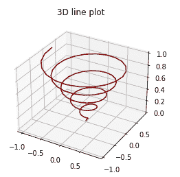
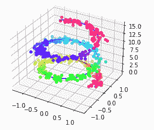

Matplotlib 三维绘图——折线和散点图
原文：https://www.studytonight.com/matplotlib/matplotlib-3d-plotting-line-and-scatter-plot
在本教程中，我们将介绍 Matplotlib 中的三维绘图。
需要注意的是，Matplotlib 最初设计时只考虑了二维绘图。但是后来，一些三维绘图工具被建立在 matplotlib 的二维显示之上，这为 Matplotlib 中的三维数据可视化提供了一套工具。
此外，2D 图用于显示单对轴之间的关系，即 x 和 y ，而 3D 图则允许我们探索 3 对轴之间的关系，即 x-y、x-z 和 y-z
三维绘图
在 Matplotlib 中的三维绘图可以通过启用实用工具包来完成。可以通过导入 mplot3d库来启用实用工具工具包，该库是通过 pip 与您的标准 Matplotlib 安装一起提供的。
在导入该子模块后，可以通过将关键字projection="3d"传递到 Matplotlib 中的任意常规轴创建功能来创建 3D 图。
让我们介绍一些在 matplotlib 中使用这个子模块进行三维绘图的例子。
三维折线图
以下是绘制三维折线图的语法:
Axes3D.plot(xs, ys, *args, **kwargs)
通过下面给出的代码片段，我们将介绍 Matplotlib 中的三维折线图:
from mpl_toolkits import mplot3d
import numpy as np
import matplotlib.pyplot as plt
fig = plt.figure()
ax = plt.axes(projection='3d')
z = np.linspace(0, 1, 100)
x = z * np.sin(30 * z)
y = z * np.cos(30 * z)
ax.plot3D(x, y, z, 'maroon')
ax.set_title('3D line plot')
plt.show()
以下是它的输出:

三维散点图
以下是三维散点图的语法:
Axes3D.scatter(xs, ys, zs=0, zdir='z', s=20, c=None, depthshade=True, *args, **kwargs)
争论
| 争吵 | 描述 |
|---|---|
| xs 、 ys | 这两个参数指示数据点的位置。 |
| zs | 它可以是长度与 xs 和 ys 相同的数组，也可以是将所有点置于同一平面的单个值。该参数的默认值为 0 。 |
| 【T0 是】T1 | 此参数用于指示在绘制 2D 集时使用哪个方向作为 z(“x”、“y”或“z”)。 |
| s | 此参数用于以磅为单位指示大小。它可以是标量，也可以是长度与 x 和 y 相同的数组。 |
| c | 此参数用于指示颜色。 |
| 深度阴影 | 此参数用于告诉是否要为散点图着色，以给出深度的外观。该参数的默认值为真。 |
通过下面给出的代码片段，我们将介绍 Matplotlib 中的三维散点图:
fig = plt.figure()
ax = plt.axes(projection="3d")
z_line = np.linspace(0, 15, 500)
x_line = np.cos(z_line)
y_line = np.sin(z_line)
ax.plot3D(x_line, y_line, z_line, 'blue')
z_points = 15 * np.random.random(500)
x_points = np.cos(z_points) + 0.1 * np.random.randn(500)
y_points = np.sin(z_points) + 0.1 * np.random.randn(500)
ax.scatter3D(x_points, y_points, z_points, c=z_points, cmap='hsv');
plt.show()
输出结果是:

总结:
在本教程中，我们学习了 Matplotlib 中三维绘图的基础知识，以及如何通过代码示例进行线和散点图。